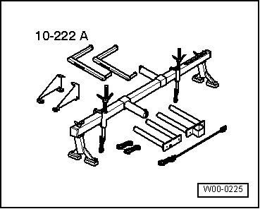
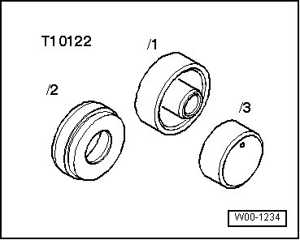
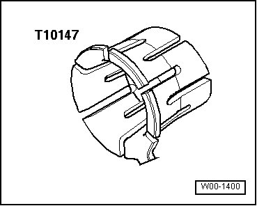
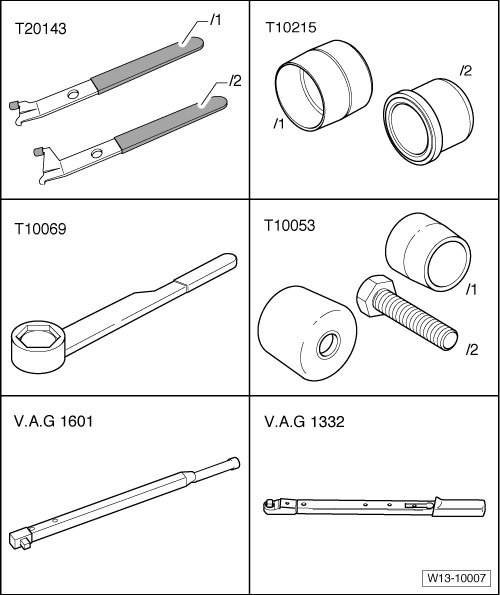

Cylinder Block Assembly: Tools and Equipment
Special Tools
Special tools, testers and auxiliary items required
• Feeler gauge
• External micrometer 75 to 100 mm
• Internal dial gauge 50 to 100 mm
• Hex head screw M8 X 50
• Depth gauge
• Engine support bridge (10 - 222 A)
• Shackle (10 - 222 A /12)
• Adapter (10 - 222 A /16)
• Adapter (10 - 222 A /19)

• Pulling fixture (T10122)

• Funnel (T10147)


Special tools, testers and auxiliary items required
• Extractor hook (T20143/1)
• Counter-holder tool (T10069)
• Assembly tool (T10215)
• Torque wrench (V.A.G 1601)
• Torque wrench (V.A.G 1332)